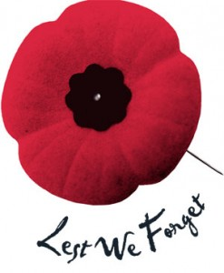

Lest We Forget
On this Remembrance Day, we honor and remember the sacrifices of those who served and continue to serve our great nation.
Let us pay tribute to the men and women who gave their lives for the freedom we enjoy today.
Why We Remember
Remembrance Day, also known as Armistice Day, is a memorial day observed in Commonwealth member states since the end of World War I.
Countdown to Remembrance Day
Remembrance Day Ceremony
Why Remembrance Day is Relevant
The Continuing Relevance
Remembrance Day holds incredible relevance in the present day and age. It serves as a powerful reminder of the human cost of war and the importance of keeping for peace. As we remember the sacrifices of those who served in the armed forces, we are compelled to reflect on the lessons learned from history and work towards preventing future conflicts.
Honoring the Sacrifices
The day is a formal ceremony to honor the sacrifices of the men and women who gave their lives for the freedom we enjoy today. It provides an opportunity for reflection on the bravery and selfhishness of those who faced incredible dangerouse challenges on the battlefield. By remembering their sacrifices, we ensure that their legacy lives on.
Learning from History
Remembrance Day encourages us to learn from the mistakes and horrors of the past. By understanding the causes and consequences of wars, we can try to build a more just and peaceful world. It requires a commitment to resolving conflicts through talking and diplomacy instead of using violence.
Fostering Unity
The day brings communities together to honor a shared history and say gratitude for the sacrifices made. It encourages a sense of unity and solidarity, ignoring differences and emphasizing the common values of peace, freedom, and human rights. Remembrance Day ceremonies and activities are for a collective expression of appreciation for our shared humanity.
Inspiring Future Generations
Remembrance Day is for future generations to appreciate the value of peace and to take an active part to creating a more nice world. Through education and remembrance, we tell on the stories of courage and toughness, inspiring a sense of responsibility to work towards a future free from the ruin of war.
World Wars Timeline
World War I (1914-1918)
World War I, also known as the Great War, involved many of the world's great powers. The major nations included the Allied Powers, as France, the United Kingdom, and Russia, against the Central Powers, including Germany, Austria-Hungary, and the Ottoman Empire. The war included big battles like the Battle of the Somme and the Battle of Verdun.
World War II (1939-1945)
World War II was a global conflict that expanded beyond the borders of World War I. The major battles included the Battle of Stalingrad, the Normandy Invasion (D-Day), and the Pacific Island-hopping campaign. The war had a deep societal impact, leading to technological advancements, the establishment of the United Nations, and the beginning of the Cold War.
Casualty Statistics
The losses of both World Wars were damaging. The total deaths passed millions, including both civilian and military losses. The number on human lives was incredible, and the scars of war still hurt for generations.
Impact on Society
The impact on society was hard, with huge destruction of cities and infrastructure.The wars caused many people to move away from their homes in large numbers, changing geopolitical landscapes, and economic consequences that changed the world order.
Remembrance Day
Remembrance Day, always on November 11th, is a day to honor and remember the sacrifices of the soldiers who served in the army. The red poppy stands for remembrance, inspired by the famous war poem "In Flanders Fields." The day serves the purpose of paying tribute to the brave men and women who gave their lives in service to their countries, especially for those from your locals and those who are related to ones from your area.